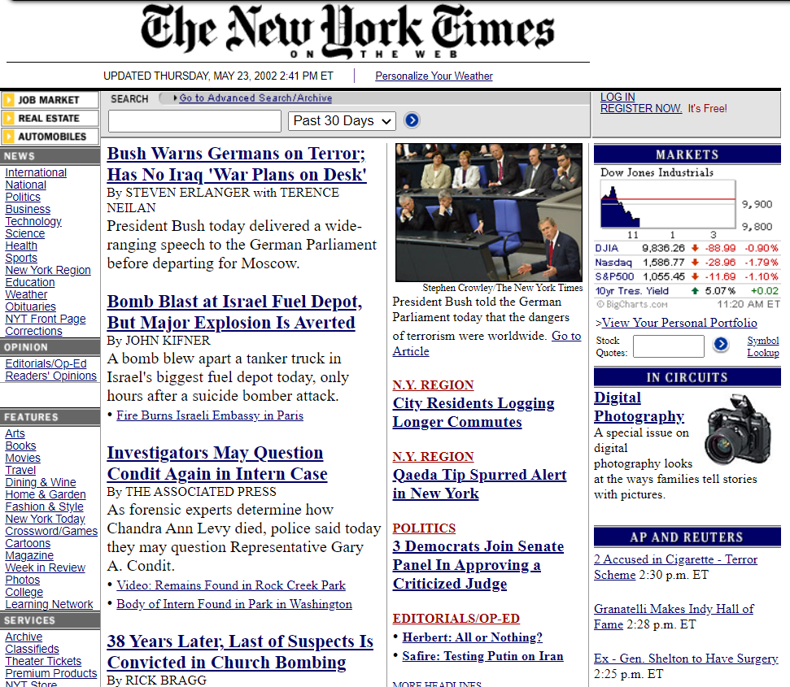
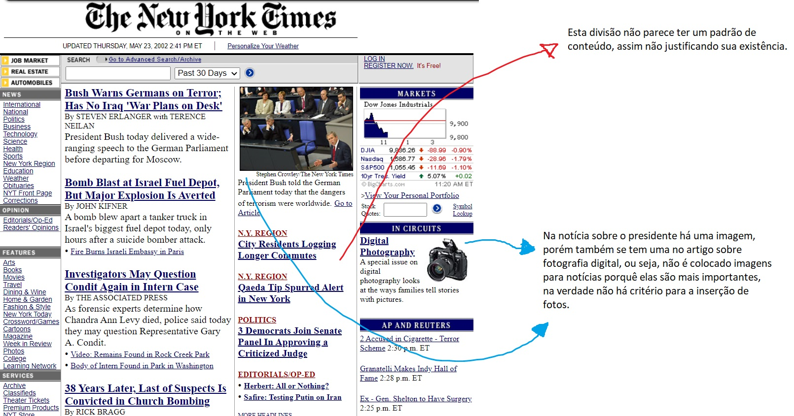
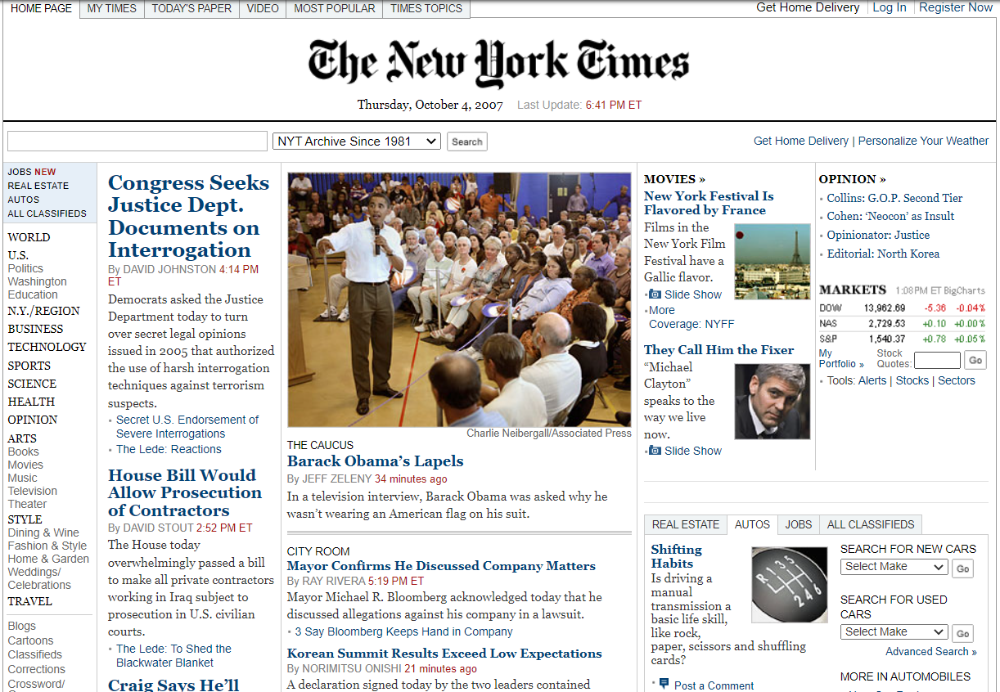
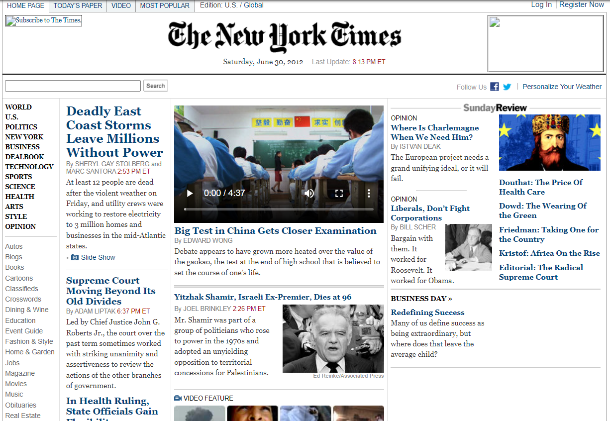
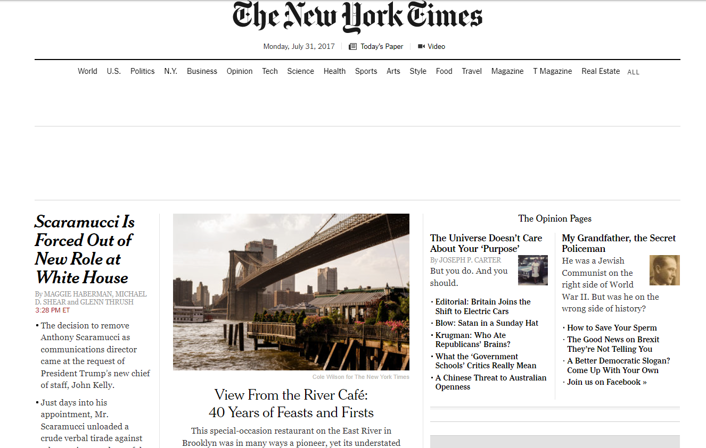
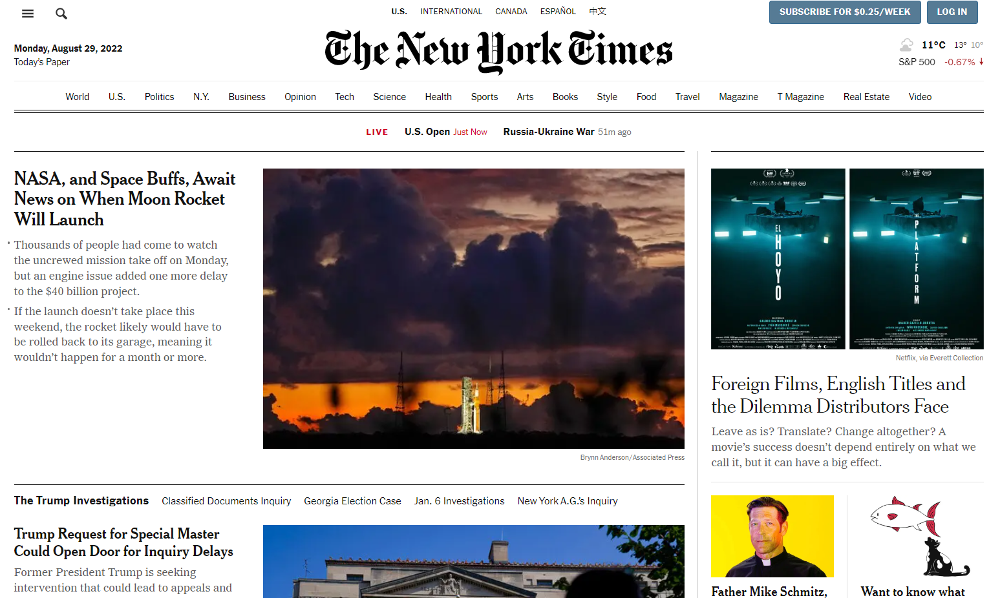

Seu propósito inícial era oferecer notícias sobre os Estados Unidos principalmente, com foco em política e em negócios, mas ainda sim abordava temas gerais.

The New York Times em 2002.

The New York Times em 2002.
Problemas:
No início o site era muito rudimentar, não era agradável aos olhos e parecia de certa forma aleatório em certas decisões, como na inserção de imagens, onde há noticias que possuem imagem na página inicial, porém sem uma razão específica, seja ela de importância ou qualquer outra coisa. O NYT também era desorganizado e não consegui identificar um padrão com relação ao conteúdo mostrado em cada divisão do site.

The New York Times em 2007.
Análise:
Já em 2007 o site recebeu um design ligeiramente mais polido e homôgeneo, porém ainda manteve alguns dos problemas citados previamente em sua versão de 2002, como a falta de critério para imagens e a disposição do conteúdo na página continuava confusa e desagradável aos olhos.

The New York Times em 2012.
Análise:
Em 2012, 10 anos depois da primeira análise o site continua com um design muito parecido, é correto dizer até que já está datado. Desta vez o site inclue vídeos junto a imagens, desta vez tendo uma quantidade maior de fotos, porém é difícil encontrar um padrão, pelo que parece todas as notícias que possuem uma imagem sobre o acontecimento serão ilustradas com ela, ainda sim não é certeza e o conteúdo do site se mantém desorganizado e desagradável ao leitor.

The New York Times em 2017.
Análise:
No ano de 2017 o "The New York Times" possue um design mais agradável aos olhos, mantendo sua essência, no geral o site parece bem pensado e o conteúdo não aparenta ter sido colocado de forma aleatória na página. Contudo ele não está tão organizado e a quantidade de coisas na página, além da pouca distância entre os itens, acaba causando uma certa confusão aos olhos.

The New York Times em 2022.
Análise:
Chegando em 2022 encontramos um website muito mais polído, ainda que seguindo o esqueleto de sua primeira versão com um design simples e homôgeneo, o The New York Times agora está muito mais organizado, o conteúdo é separado claramente e segue uma ordem lógica com relação a como ele posiciona as notícias e seu conteúdo, todos possuem uma imagem para ilustrar o que está sendo dito e seu impacto nos olhos é muito agradável.
Conclusão
O site mudou bastante ao longo do tempo, porém mantendo sua essência de uma página simples e sem muita coloração no design. Os problemas atuais do site se dão justamente pela base visual que ele quer manter, tornando-o limitado com relação a linguagem visual e tendo um aspecto datado, além de precisar de uma organização melhor, afinal as notícias principais não estão centralizadas e dividem espaço com outra aba, contudo eu manteria a simplicidade já existente.
Propósito:
O propósito não mudou significativamente ao longo do tempo, o site ainda se encontra focado nas políticas dos Estados Unidos e tendo outros acontecimentos geralmente em segundo plano. Talvez a maior mudança tenha sido a remoção dos dados da bolsa de valores na página inicial.
Como atrair o público jovem e de periferia:
Para o site ser interessante para esse grupo ele teria de adotar uma línguagem mais simples e fácil de entender, possuir notícias mais variadas, não sendo apenas de política e sim de diversas coisas que interessam a esse público, misturando os gêneros para manter o jovem no site e, conforme a familiaridade, ele começaria a se interessar pelo conteúdo que a primeiro momento ele costumava ignorar. Acredito que um direcionamento de notícias de locais próximos ao que ele vive, com oportunidades e informações em geral também seria positivo, assim ele estária mais próximo e teria maior chance de contato com o que está acontecendo ao seu redor, tanto para oportunidades quanto para agir conforme as necessidades do local que ele habita.